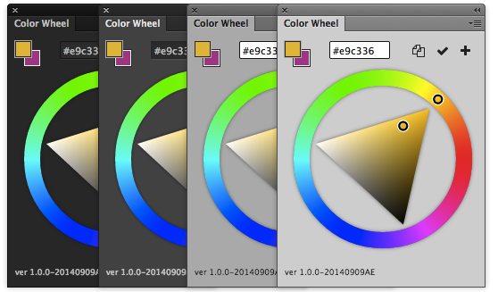

An advanced color picker plugin panel for Photoshop CC 2014 to help you pick colors with single click! We utilized HTML5 & the latest Photoshop Cloud API to make it stable, fast & accurate! If you find Photoshop color picker a little difficult to use, then try our panel, you will find how fast our plugin can boost your design workflow!
Set foreground/background color with ease
Copy color hex value
Add chosen color to color swatches with single click.
Apply chosen color to selected Shape/Fill/Text layers with single click! Multiple layers are supported.
Support Windows & Mac OS
Support Photoshop CC 2014
Keep the interface them sync with Photoshop
And more...
Does Photoshop Color Wheel support Photoshop CS5/6?
No. Since our panel rely upon the latest Photoshop Creative Cloud technology, Photoshop Color Wheel only supports Photoshop CC 2014.
How to use this panel?
It's very simple. You click to pick the color form the color wheel. Click to switch Foreground and Background color, just as simple as Photoshop native color picker.
Click to copy the hex value for current color. Click to add current color to new color swatch. Click to apply the current color to any Shape Layer/Fill Layer/Text Layer! Even multiple layers are supported!
How to purchase Photoshop Color Wheel?
You can go to official Adobe Store to purchase it. If you prefer to pay via Paypal, please contact us and we will create a private purchase link for you.
How to get Photoshop Color Wheel updates?
After purchased, we will push each new version to the email you used to made purchase.
Can I request a refund?
If you report an issue that we cannot fix within 3 business days, we will issue a full refund for you!
Having trouble with this plugin? Or want to suggest a new feature? You are welcome!:) Please feel free to contact hi@colorwheelPS.com and we’ll help you sort it out.